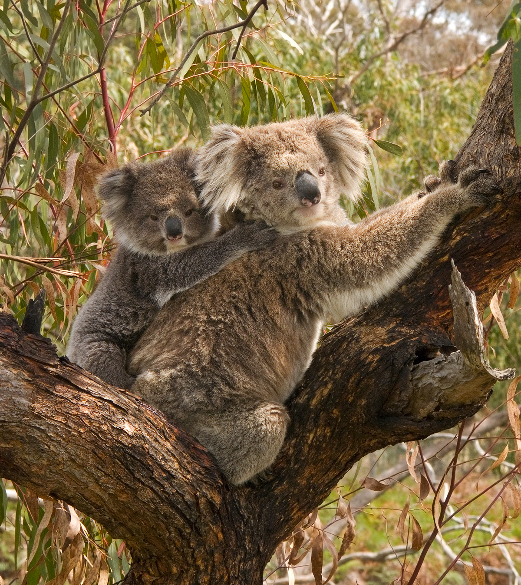
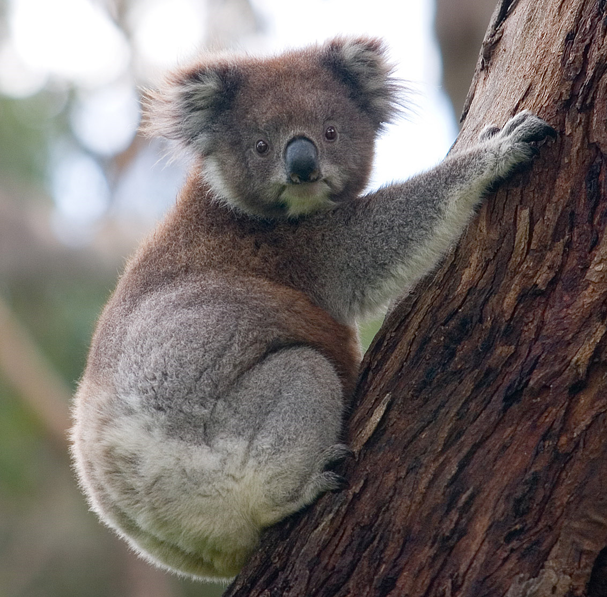
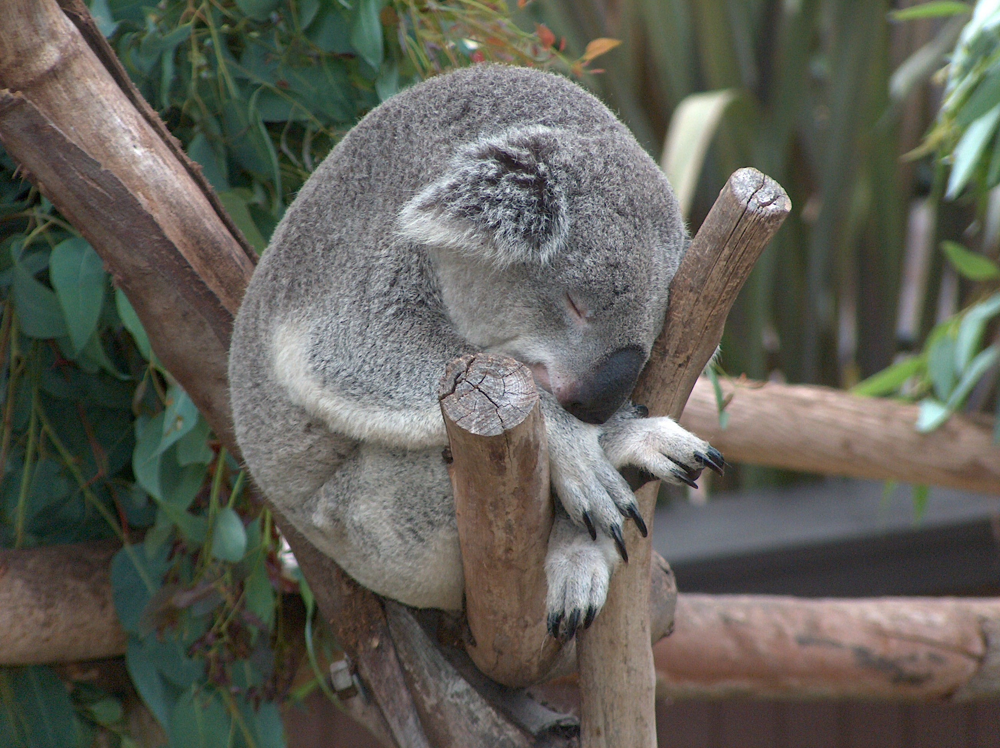

01 / Family
A ride through the branches


A small joey holds onto an adult koala’s back. Together, their shapes almost blend into the gray bark around them.
Look for the joey’s paws, then follow the adult’s grip around the branch. The details turn a simple portrait into a picture of movement and connection.
02 / Climbing
Holding on to the trees


This photograph catches a koala against a tree trunk. Its body curves around the bark, surrounded by a frame of green leaves.
Notice the contrast between the rough trunk and the soft fur. The tree is part of the subject, giving the image its shape and setting.
03 / Resting
A quiet place to pause


With its eyes closed, this koala rests between the branches. The close view makes the ears, nose, and folded posture easy to see.
Compare this image with the other two photographs. The same subject can suggest a different mood through posture, framing, and the space around it.